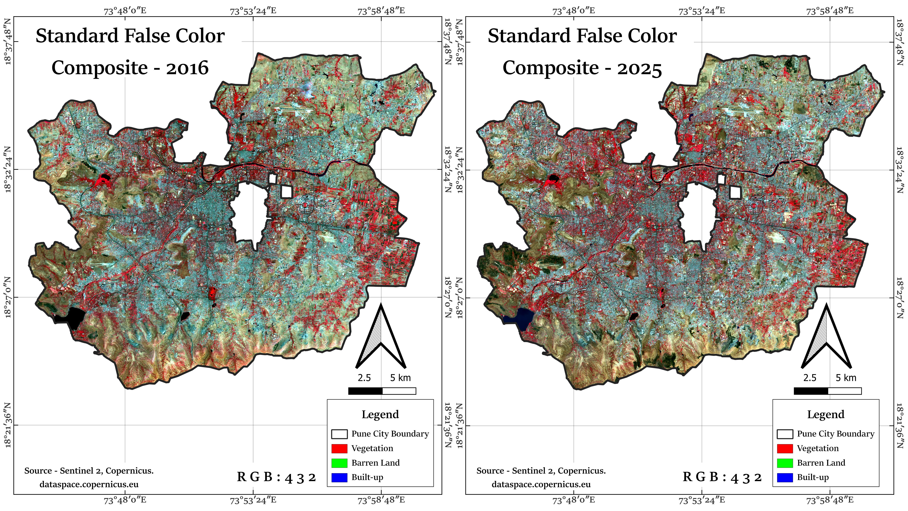
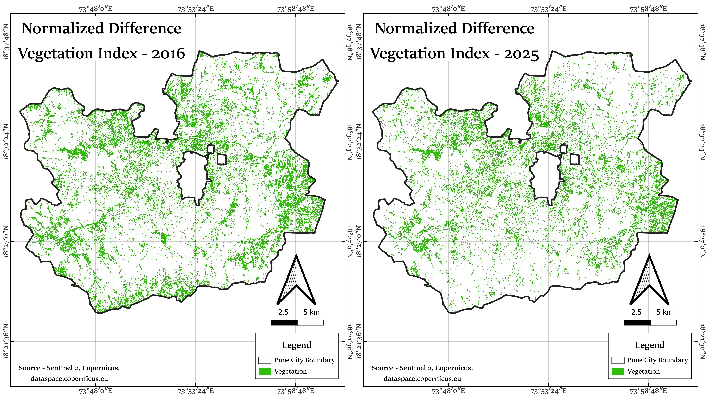
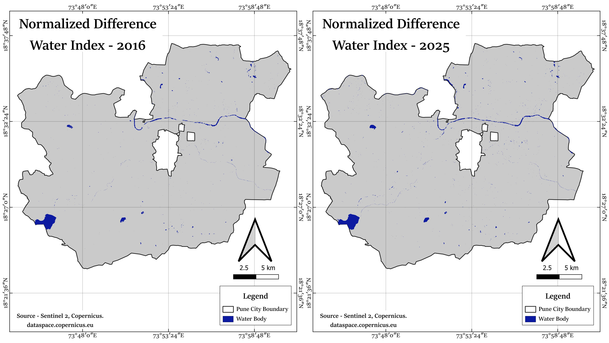
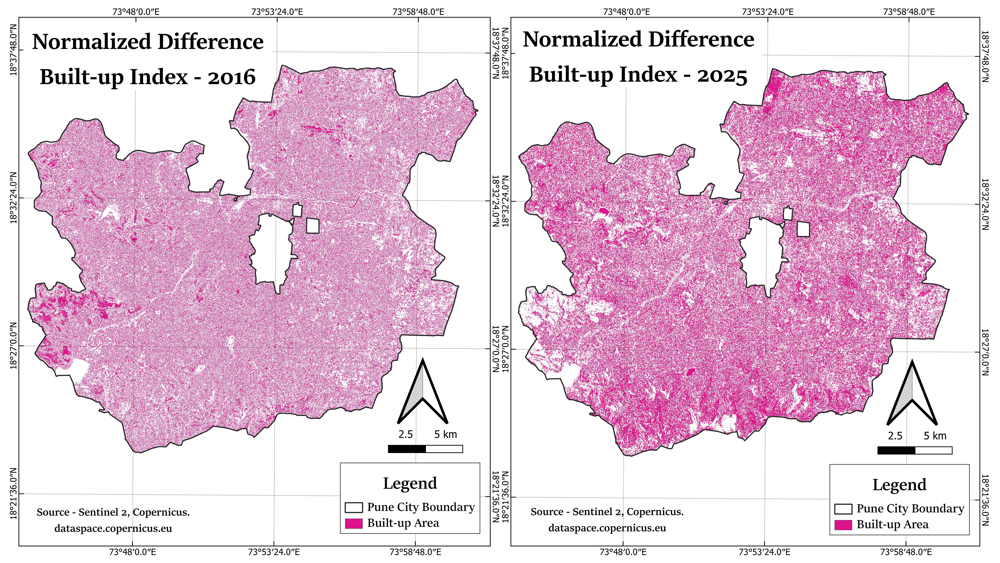
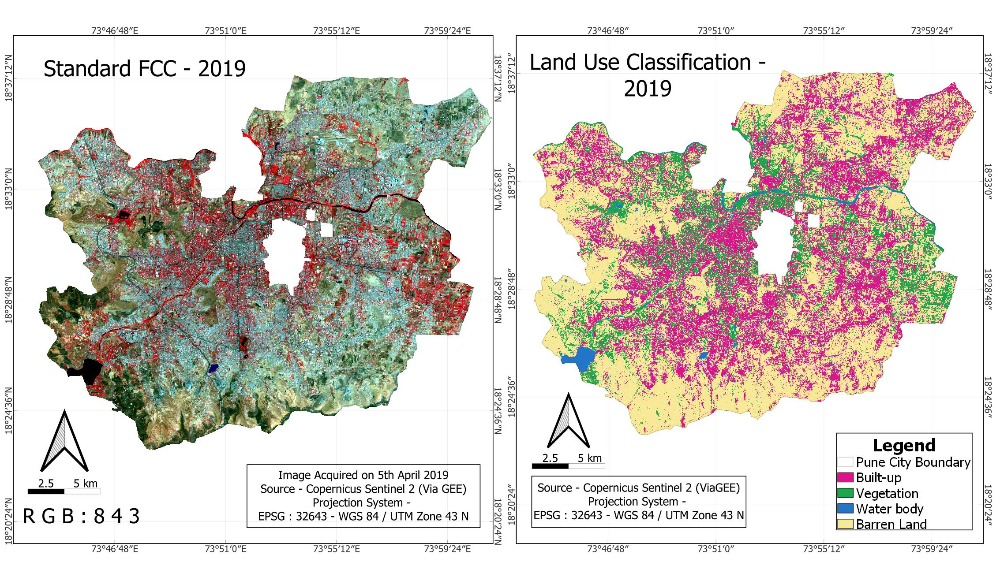
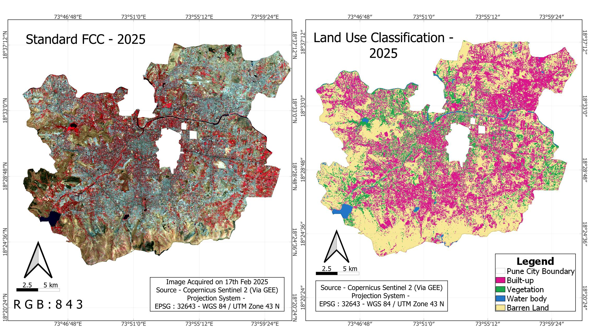
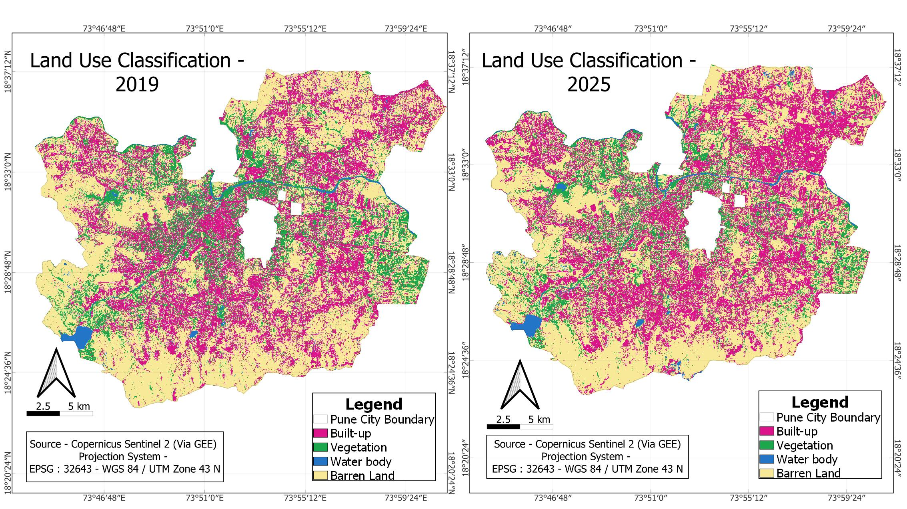
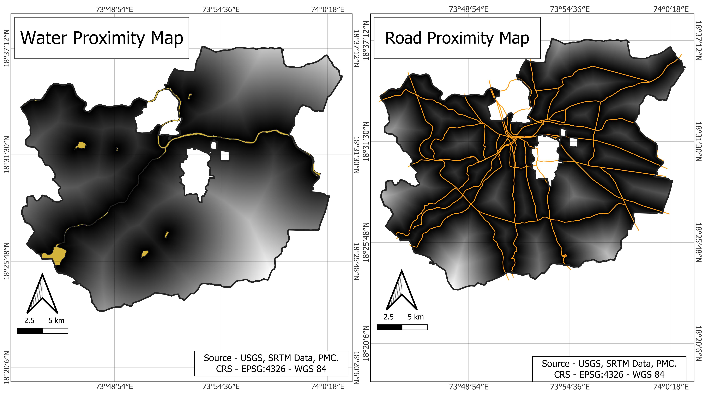
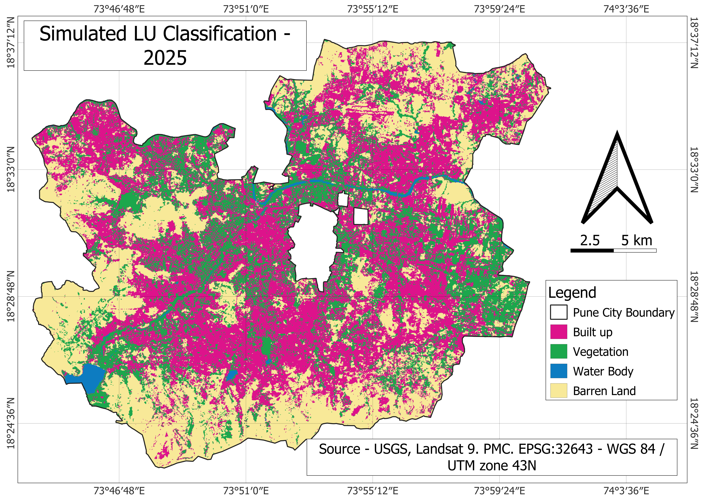

QGIS Maps
Basics of GIS
Digitisation
Advance GIS Projects
Image Indices

Sentinel Standard FCC

Sentinel NDVI

Sentinel NDWI

Sentinel NDBI
LULC Change Detection and Accuracy Assessment

LULC 2019

LULC 2025

LULC Comparison
Geospatial Application - Modelling Urban Expansion

Land Use - 1990

Land Use - 2025

Proximity Maps

Simulation 2025

Simulation 2030